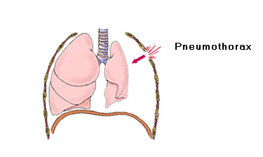
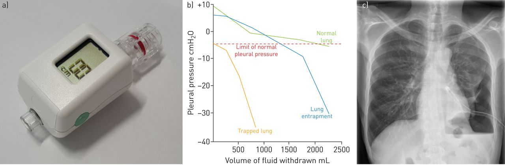
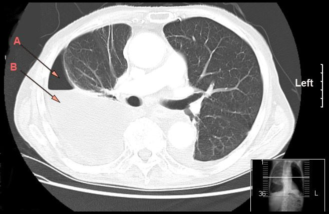

- Importance of the Pleural Space
- Mediastinum separates each side of thorax.
- Air (pneumothorax) or fluid (hydrothorax, generically) -> relative negative pressure lost -> lung lobes collapse.
- New pressure gradient -> pneumothorax.
- Left-sided pneumothorax with a chest tube in place.
- CT scan of right-sided hydropneumothorax. A = air, B = fluid.
